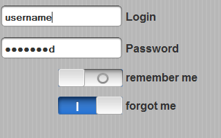

This is JavaScript library for prototype iPhone interface on web pages
Example with docs | In iPhone GUI
Example with docs | In iPhone GUI

Example with docsscroll-docs.html | In iPhone GUI

Example with docs | In iPhone GUI

Consist of following widgets


Examples of using iPhone UI w/out widgets
In examples I use iPhone GUI PSD 3.0 and iPhone toolbar icons